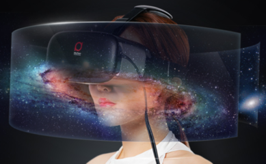
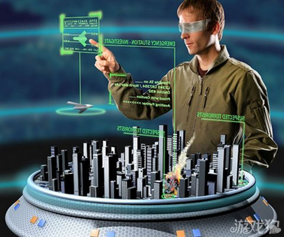
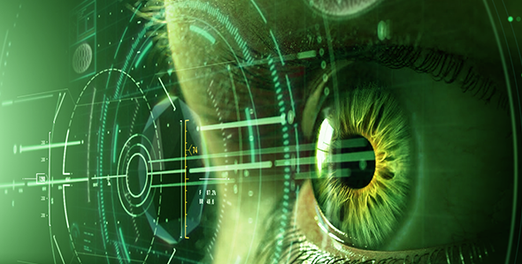

简单说
虚拟现实技术是一种可以创建和体验虚拟世界的计算机仿真系统它利用计算机生成一种模拟环境是一种多源信息融合的交互式的三维动态视景和实体行为的系统仿真使用户沉浸到该环境中

说到显示设备，大家第一反应可能就是显示器或者各种显示面板，它是一种输出设备用于显示图像及色彩。从早期的黑白世界到色彩世界，显示设备走过了漫长而艰辛的历程，随着显示器技术的不断发展，它的呈现形式也五花八门，分类也越来越精准。
发展历史
虚拟现实技术演变发展史大体上可以分为四个阶段有声形动态的模拟是蕴涵虚拟现实思想的第一阶段（1963）年以前虚拟现实萌芽为第二阶段（1963 -1972 ）虚拟现实概念的产生和理论初步形成为第三阶段（1973 -1989 ）虚拟现实理论进一步的完善和应用为第四阶段（1990 -2004 ）。2016年2月3日，虚拟现实技术登陆台北电玩展受热捧。

现在的大部分虚拟现实技术都是视觉体验，一般是通过电脑屏幕、特殊显示设备或立体显示设备获得的，不过一些仿真中还包含了其他的感觉处理，比如从音响和耳机中获得声音效果。在一些高级的触觉系统中还包含了触觉信息，也叫作力反馈，在医学和游戏领域有这样的应用。